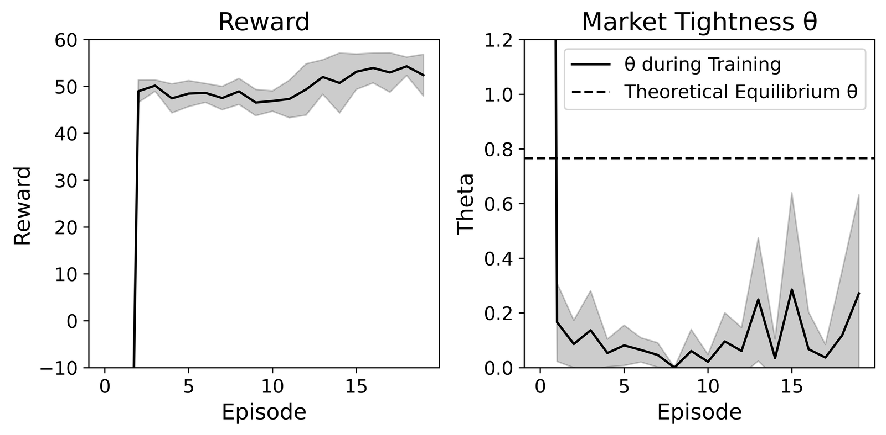
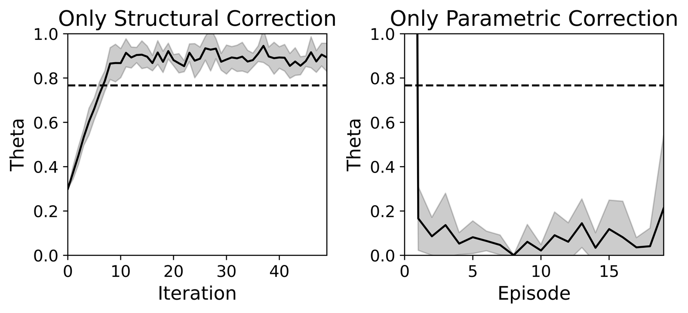

Applying Reinforcement Learning (RL) to economic modeling reveals a fundamental tension: standard RL agents do not behave as competitive price-takers. While macroeconomic models typically assume agents take aggregate conditions as given, a naive single-agent RL algorithm learns to internalize its impact on the environment, effectively exerting market power. We illustrate this divergence in a search-and-matching model with concave production, showing that a standard RL agent converges to a monopsonistic allocation rather than the competitive equilibrium. Furthermore, we show that RL's approach to time discounting distorts standard intertemporal economic trade-offs. To resolve these issues, we propose a Calibrated Mean-Field Reinforcement Learning framework that restricts the agent to optimize against an exogenous aggregate state to restore price-taking behavior, and recalibrates the RL reward structure to reflect true economic opportunity costs. By iteratively updating the aggregate state, our algorithm converges to a stationary fixed point that recovers the competitive equilibrium. This approach provides a method for embedding learning algorithms into dynamic general equilibrium models.
Problem
We study a search-and-matching labor market with concave production. A firm posts vacancies at a cost c per period; vacancies are filled at a rate that depends on market tightness θ = v/u, and wages are set by bargaining. In the economic model, firms are atomistic and take θ as given.
A single RL agent trained in the same environment behaves differently, for two reasons.
Structural bias. The agent observes that its own vacancy postings change θ and thereby wages, and learns to act as a monopsonist.
Parametric bias. In the economic model, the firm's job-creation condition weighs vacancy costs by the interest rate and the separation rate. The RL discount factor does not capture this opportunity cost of capital, so the agent misjudges the cost of a vacancy.
The trained agent keeps market tightness around 0.1, far below the theoretical equilibrium of 0.78.

Figure 1. Naive RL simulation. Left: reward during training. Right: market tightness θ during training compared with the theoretical equilibrium. Shaded regions show standard deviations over five runs.
Method
Calibrated Mean-Field Reinforcement Learning corrects both biases. The structural bias is removed by a mean-field formulation: the agent represents one of many atomistic firms and optimizes against a given aggregate state, so its own actions cannot move market tightness. The parametric bias is removed by replacing the vacancy cost c in the reward with an effective cost ceff that reflects the economic opportunity cost of capital. The algorithm iterates:
Initialize the aggregate market tightness θ(0).
Given θ(k), train the agent with DDPG, using ceff in the reward.
Update the aggregate state from the learned policy to obtain θ(k+1).
Repeat until the aggregate state and the policy are consistent, that is, until a fixed point is reached.
Results
With both corrections, market tightness converges to the theoretical equilibrium.
Figure 2. Market tightness θ over mean-field iterations with both corrections, compared with the theoretical equilibrium. Shaded regions show standard deviations over five runs.
Correcting only one bias is not sufficient. With the structural correction alone, the agent underestimates the cost of vacancies and over-hires. With the parametric correction alone, the agent still manipulates the market.

Figure 3. Market tightness θ with only the structural correction (left) and only the parametric correction (right).
The policy learned with both corrections maps the unemployment rate to market tightness. It passes close to the theoretical steady state at u = 0.033 and θ = 0.78.
Figure 4. The learned policy function: market tightness θ against the unemployment rate ut. The star marks the theoretical steady state (0.033, 0.78). Shaded regions show standard deviations over five runs.